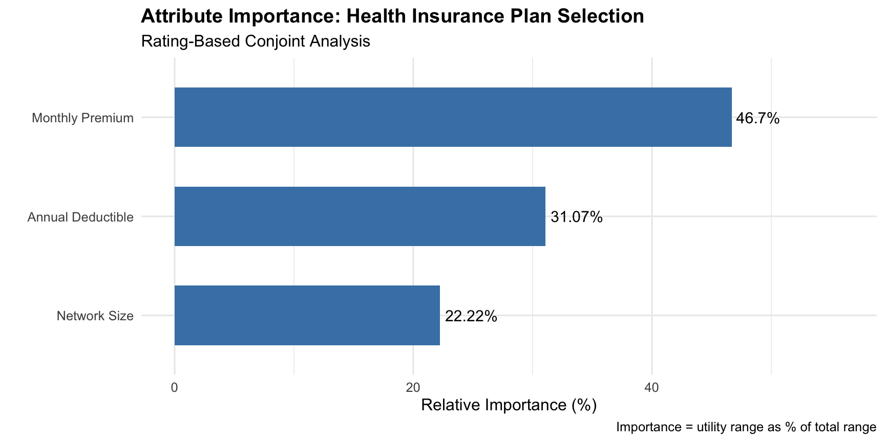
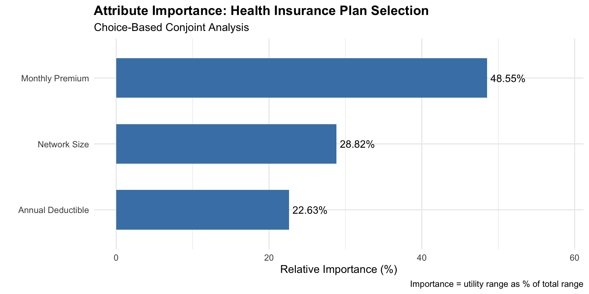

| Premium ($) | Deductible ($) | Network | Profile ID |
|---|---|---|---|
| 200 | 500 | Small | 1 |
| 300 | 500 | Small | 2 |
| 200 | 1500 | Small | 3 |
| 300 | 1500 | Small | 4 |
| 200 | 500 | Large | 5 |
| 300 | 500 | Large | 6 |
| 200 | 1500 | Large | 7 |
| 300 | 1500 | Large | 8 |
Week 15
2026-04-22
By the end of this lecture, you will be able to:
Conjoint analysis is a survey-based technique to understand how people make decisions when facing trade-offs between multiple attributes.
The term “conjoint” comes from “considered jointly”; we study how attributes are evaluated together rather than in isolation.
Asking “Do you prefer low cost?” always gets a “yes.” But asking someone to choose between a low-cost option with long wait times vs. a high-cost option with short wait times reveals their true priorities.
Healthcare managers face constant service design decisions:
Conjoint analysis quantifies these preferences by forcing realistic trade-offs.
| Rating-Based | Choice-Based | |
|---|---|---|
| Task | Rate each profile (1-10) | Choose preferred from a set |
| Analysis | OLS linear regression | Multinomial logit |
| Pros | Simple, builds on familiar methods | Mimics real decisions, forces trade-offs |
| Cons | May not reveal true trade-offs | Requires more data prep |
Choice-based is generally preferred in practice because it better reflects actual decision-making behavior.
A leading application of conjoint analysis in healthcare is modeling how employees choose health insurance plans during open enrollment.
Our example uses three key attributes:
| Attribute | Level 1 | Level 2 | Why It Matters |
|---|---|---|---|
| Monthly Premium | $200 | $300 | Direct, visible cost |
| Annual Deductible | $500 | $1,500 | Amount paid before coverage |
| Network Size | Large | Small | Access to doctors/hospitals |
We can construct different insurance plans by combining the attribute levels.
In rating-based conjoint, respondents rate hypothetical profiles one at a time:
By collecting ratings for multiple profiles across many respondents, we use regression to decompose each rating into the contribution of each attribute.
Rating-based conjoint uses OLS regression:
\[\text{Rating} = \beta_0 + \beta_1(\text{Premium}) + \beta_2(\text{Deductible}) + \beta_3(\text{Network}) + \varepsilon\]
Variable coding: Premium and Deductible are continuous (dollars); Network is categorical (converted to a factor with Small as reference).
With 3 attributes × 2 levels each, we have \(2^3 = 8\) possible profiles (full factorial design):
| Premium ($) | Deductible ($) | Network | Profile ID |
|---|---|---|---|
| 200 | 500 | Small | 1 |
| 300 | 500 | Small | 2 |
| 200 | 1500 | Small | 3 |
| 300 | 1500 | Small | 4 |
| 200 | 500 | Large | 5 |
| 300 | 500 | Large | 6 |
| 200 | 1500 | Large | 7 |
| 300 | 1500 | Large | 8 |
Let’s load the dataset and required packages:
# Required packages for rating-based conjoint
library(tidyverse)
rating_insurance <- read.csv("https://raw.githubusercontent.com/mba642-spring-26/mba642-spring-26.github.io/refs/heads/main/datasets/week14_rating_insurance_data.csv")
# Convert network to a factor (Small = reference level)
rating_insurance <- rating_insurance %>%
mutate(network = factor(network, levels = c("Small", "Large")))
head(rating_insurance, 5) respondent_id profile_id premium deductible network rating
1 1 1 200 500 Small 6.0
2 1 2 300 500 Small 4.0
3 1 3 200 1500 Small 5.1
4 1 4 300 1500 Small 3.8
5 1 5 200 500 Large 6.0Now that the data is prepared, let’s fit an OLS regression of rating on the three attributes. The estimated coefficients are exactly the part-worth utilities (the “value” each attribute level adds or subtracts).
Call:
lm(formula = rating ~ premium + deductible + network, data = rating_insurance)
Residuals:
Min 1Q Median 3Q Max
-1.29525 -0.35625 0.00475 0.31625 1.52975
Coefficients:
Estimate Std. Error t value Pr(>|t|)
(Intercept) 8.512e+00 9.679e-02 87.94 <2e-16 ***
premium -1.161e-02 3.477e-04 -33.39 <2e-16 ***
deductible -7.725e-04 3.477e-05 -22.22 <2e-16 ***
networkLarge 5.525e-01 3.477e-02 15.89 <2e-16 ***
---
Signif. codes: 0 '***' 0.001 '**' 0.01 '*' 0.05 '.' 0.1 ' ' 1
Residual standard error: 0.4917 on 796 degrees of freedom
Multiple R-squared: 0.7005, Adjusted R-squared: 0.6993
F-statistic: 620.5 on 3 and 796 DF, p-value: < 2.2e-16The regression coefficients are the part-worth utilities:
The attribute whose levels produce the largest utility range has the most power to influence preferences (i.e., respondents are more sensitive to changes in that attribute).
Steps:
Importance scores depend entirely on the levels tested. Testing $200 vs $201 would make premium appear unimportant! Always choose levels that reflect realistic market variation when designing the study.
# Extract the estimated coefficients (part-worth utilities) from the model
coef_ins <- coef(model_rating_ins)
# Utility range = |coefficient| * (level span). For continuous attributes,
# multiply by the high-minus-low level to get the full utility swing.
range_premium <- abs(coef_ins["premium"] * (300 - 200)) # $200 -> $300
range_deductible <- abs(coef_ins["deductible"] * (1500 - 500)) # $500 -> $1500
# For the categorical factor, the coefficient itself IS the range (Large vs. Small)
range_network <- abs(coef_ins["networkLarge"] * 1)
# Sum of ranges = denominator for computing each attribute's importance share
total_range <- range_premium + range_deductible + range_network
importance_rating_ins <- data.frame(
attribute = c("Monthly Premium", "Annual Deductible", "Network Size"),
utility_range = round(c(range_premium, range_deductible, range_network), 3),
importance_pct = round(c(range_premium, range_deductible, range_network) / total_range * 100, 3)
)
importance_rating_ins attribute utility_range importance_pct
premium Monthly Premium 1.161 46.702
deductible Annual Deductible 0.772 31.074
networkLarge Network Size 0.552 22.224ggplot(importance_rating_ins, aes(x = reorder(attribute, importance_pct),
y = importance_pct)) +
geom_col(fill = "steelblue", width = 0.6) +
coord_flip() +
geom_text(aes(label = paste0(round(importance_pct, 2), "%")),
hjust = -0.1, size = 4) +
labs(title = "Attribute Importance: Health Insurance Plan Selection",
subtitle = "Rating-Based Conjoint Analysis",
x = "",
y = "Relative Importance (%)",
caption = "Importance = utility range as % of total range") +
theme_minimal(base_size = 12) +
theme(plot.title = element_text(face = "bold")) +
ylim(0, max(importance_rating_ins$importance_pct) * 1.2)
Figure 1
Part-worth utilities are informative, but they live in “utility units” which are hard to interpret or act on. Managers and executives think in dollars.
WTP translates the abstract utility gain from an attribute into the concrete price premium customers would accept for it, making the results directly usable for pricing, product design, and ROI decisions.
WTP converts utility values into dollar amounts:
\[\text{WTP} = -\frac{\beta_{\text{attribute}}}{\beta_{\text{cost}}}\]
The basic idea: we divide the utility gain from an attribute by the “utility cost” of $1 of premium. The negative sign flips the premium’s negative coefficient so WTP comes out as a positive dollar value.
A. WTP for a Large network (vs. Small):
\[\text{WTP}_{\text{network}} = -\frac{\beta_{\text{networkLarge}}}{\beta_{\text{premium}}} = -\frac{0.5525}{-0.0116} \approx \$47.63\]
B. WTP for a $1,000 lower deductible:
A $1,000 reduction in deductible produces a utility gain of \(-1000 \times \beta_{\text{deductible}}\); divide by \(-\beta_{\text{premium}}\) to convert to dollars:
\[\text{WTP}_{\text{\$1k deductible}} = \frac{-1000 \times \beta_{\text{deductible}}}{-\beta_{\text{premium}}} = \frac{-1000 \times (-0.0008)}{-(-0.0116)} \approx \$68.97\]
Note: coefficients are rounded to 4 decimals here for readability, so the WTP values shown may differ slightly from R’s output, which uses the full-precision coefficients.
networkLarge
47.58829 deductible
66.53747 | Attribute | WTP per Month |
|---|---|
| Large Network (vs. Small) | $47.59 |
| $1,000 Lower Deductible | $66.54 |
WTP turns customer preferences into a direct input for profit/cost decisions.
If the insurer offered two hypothetical plans side-by-side, what fraction of customers would likely choose each one? Conjoint results let us predict market share before launching the product.
How we’ll compute it:
\[\text{share}_j = \frac{\text{rating}_j}{\sum_{k=1}^{K} \text{rating}_k}\]
We’ll compare two plans:
| Plan | Premium | Deductible | Network |
|---|---|---|---|
| Premium Plan (A) | $250 | $500 | Large |
| Budget Plan (B) | $200 | $1,500 | Small |
If both plans were offered side-by-side, what market share would each plan capture?
Step 1: Get the predicted rating (overall utility) of each plan:
plan_A <- data.frame(name = "Premium Plan", premium = 250, deductible = 500, network = "Large")
plan_B <- data.frame(name = "Budget Plan", premium = 200, deductible = 1500, network = "Small")
# Predicted rating = plug each plan's attribute values into the model
rating_A <- predict(model_rating_ins, plan_A)
rating_B <- predict(model_rating_ins, plan_B)
cat("Predicted Rating of Plan A is:", rating_A, "and predicted rating of Plan B is:", rating_B, "\n")Predicted Rating of Plan A is: 5.77575 and predicted rating of Plan B is: 5.03125 Step 2: Convert predicted ratings into market shares via proportional allocation: each plan’s share equals its rating divided by the sum of all plan ratings.
\[\text{share}_A = \frac{\text{rating}_A}{\text{rating}_A + \text{rating}_B}\]
The market share of Plan A is 53.4 %
and the market share of Plan B is 46.6 %| Plan | Predicted Rating | Market Share |
|---|---|---|
| Plan A | 5.78 | 53.4% |
| Plan B | 5.03 | 46.6% |
Scenario: Your healthcare organization is designing a telehealth program with three key attributes:
| Attribute | Level 1 | Level 2 |
|---|---|---|
| Wait Time | Same-day | 3 days |
| Mode | Video | Phone |
| Co-pay | $20 | $40 |
Questions we will address:
Load the dataset using the code below:
respondent_id profile_id wait_sameday mode_video copay rating
1 1 1 1 1 20 6.2
2 1 2 0 1 20 4.4
3 1 3 1 0 20 5.1
4 1 4 0 0 20 3.9
5 1 5 1 1 40 5.3The dataset contains one row per rated profile per respondent, with the following columns:
| Variable | Type | Description |
|---|---|---|
respondent_id |
ID | Unique identifier for each respondent |
wait_sameday |
Dummy (0/1) | 1 = same-day appointment, 0 = 3-day wait |
mode_video |
Dummy (0/1) | 1 = video consultation, 0 = phone |
copay |
Continuous ($) | Co-pay amount ($20 or $40) |
rating |
Outcome (1–10) | Respondent’s preference rating for the profile |
Note: Wait time and mode are coded as dummies because they are categorical (two levels each). Co-pay is continuous so we can compute WTP by dividing other coefficients by copay’s coefficient.
Task 1: Estimate part-worth utilities
Task 2: Calculate attribute importance
coef_th <- coef(model_rating_th)
range_wait <- abs(coef_th["___"] * 1)
range_mode <- abs(coef_th["___"] * 1)
range_copay <- abs(coef_th["___"] * (40 - 20))
total_range_th <- range_wait + range_mode + range_copay
importance_rating_th <- data.frame(
attribute = c("Wait Time", "Consultation Mode", "Co-pay"),
importance_pct = c(range_wait, range_mode, range_copay) / total_range_th * 100
)
importance_rating_thTask 3: Calculate WTP
We want to know how much patients would pay for each upgrade:
wtp_sameday: how much more would patients pay for same-day access (vs. a 3-day wait)?wtp_video: how much more would patients pay for a video consultation (vs. phone)?Task 4: Predict Market Shares
Suppose our organization could offer two telehealth programs side-by-side. What share of patients would choose each?
| Program | Wait | Mode | Co-pay |
|---|---|---|---|
| Program A | Same-day | Video | $40 |
| Program B | 3-day wait | Phone | $20 |
program_A <- data.frame(wait_sameday = 1, mode_video = 1, copay = 40)
program_B <- data.frame(wait_sameday = 0, mode_video = 0, copay = 20)
# Predict ratings, then allocate shares proportionally
rating_A_th <- predict(model_rating_th, ____)
rating_B_th <- predict(model_rating_th, ____)
total_rating_th <- rating_A_th + rating_B_th
share_A_th <- rating_A_th / total_rating_th
share_B_th <- rating_B_th / total_rating_th
cat("Program A: ", round(share_A_th * 100, 1), "%\n")
cat("Program B: ", round(share_B_th * 100, 1), "%\n")Choice-based conjoint (CBC), also called a Discrete Choice Experiment (DCE), presents respondents with sets of competing product profiles and asks them to choose the one they most prefer:
For example, Choice Set 1:
| Plan A | Plan B | |
|---|---|---|
| Premium | $200 | $300 |
| Deductible | $1,500 | $500 |
| Network | Small | Large |
Which plan would you choose?
When forced to choose, respondents must make explicit trade-offs (more like real-life decisions), revealing their true priorities.
For each alternative \(i\), we define total utility as:
\[U_i = V_i + \varepsilon_i\]
People choose the alternative with the highest total utility. The multinomial logit formula converts systematic utilities into choice probabilities:
\[P(\text{Choose } i) = \frac{e^{V_i}}{\sum_{j=1}^{J} e^{V_j}}\]
vs. logistic regression: logistic regression answers “will you choose (yes/no)?”, while multinomial logit answers “which one will you choose?”.
Same scenario as before — employees choosing health insurance plans during open enrollment — but now respondents pick one plan from a choice set instead of rating each plan individually.
Three attributes describe each plan:
| Attribute | Level 1 | Level 2 |
|---|---|---|
| Monthly Premium | $200 | $300 |
| Annual Deductible | $500 | $1,500 |
| Network Size | Large | Small |
For example: Which plan would you choose?
| Attribute | Plan A | Plan B |
|---|---|---|
| Monthly Premium | $200 | $300 |
| Annual Deductible | $1,500 | $500 |
| Network Size | Small | Large |
Let’s load the dataset and required packages using the code below:
library(mlogit) # mlogit package for multinomial logit models
library(dfidx) # dfidx package for preparing data for choice models
choice_long <- read.csv("https://raw.githubusercontent.com/mba642-spring-26/mba642-spring-26.github.io/refs/heads/main/datasets/week14_choice_insurance_long.csv")
head(choice_long, 5) choice_set alternative premium deductible network_large choice
1 100_1 A 200 500 0 1
2 100_1 B 300 500 0 0
3 100_2 A 300 1500 1 0
4 100_2 B 200 500 0 1
5 100_3 A 300 1500 0 0The dataset contains one row per alternative per choice set per respondent:
| Variable | Type | Description |
|---|---|---|
choice_set |
ID | Unique ID for each choice set (combines respondent and set number) |
alternative |
ID | Plan label within the set (e.g., Plan A / Plan B) |
premium |
Continuous ($) | Monthly premium ($200 or $300) |
deductible |
Continuous ($) | Annual deductible ($500 or $1,500) |
network_large |
Dummy (0/1) | 1 = Large network, 0 = Small network |
choice |
Outcome (0/1) | 1 if the respondent picked this alternative, 0 otherwise |
dfidx() indexes the long-format data so R knows which rows belong to the same choice set and which column marks the chosen alternative.mlogit(). We regress choice on the plan attributes| 0 drops alternative-specific intercepts since we only care about attribute effects.
Call:
mlogit(formula = choice ~ premium + deductible + network_large |
0, data = choice_mlogit, method = "nr")
Frequencies of alternatives:choice
A B
0.52375 0.47625
nr method
5 iterations, 0h:0m:0s
g'(-H)^-1g = 8E-06
successive function values within tolerance limits
Coefficients :
Estimate Std. Error z-value Pr(>|z|)
premium -0.01372071 0.00120040 -11.4301 < 2.2e-16 ***
deductible -0.00063955 0.00011105 -5.7590 8.464e-09 ***
network_large 0.81453864 0.11329822 7.1893 6.510e-13 ***
---
Signif. codes: 0 '***' 0.001 '**' 0.01 '*' 0.05 '.' 0.1 ' ' 1
Log-Likelihood: -437.03The regression coefficients are log odds ratios, and they are used as part-worth utilities in the choice model:
Higher utility → higher probability of being chosen, but the relationship is nonlinear (exponential).
Same formula as before: for each attribute, compute the utility range across its levels (\(|\beta| \times\) level spread), then divide by the total range across all attributes.
coef_choice <- coef(model_mlogit_ins)
range_premium_c <- abs(coef_choice["premium"] * (300 - 200))
range_deductible_c <- abs(coef_choice["deductible"] * (1500 - 500))
range_network_c <- abs(coef_choice["network_large"] * 1)
total_range_c <- range_premium_c + range_deductible_c + range_network_c
importance_choice_ins <- data.frame(
attribute = c("Monthly Premium", "Annual Deductible", "Network Size"),
utility_range = c(range_premium_c, range_deductible_c, range_network_c),
importance_pct = c(range_premium_c, range_deductible_c, range_network_c) / total_range_c * 100
)
importance_choice_ins attribute utility_range importance_pct
premium Monthly Premium 1.3720706 48.54902
deductible Annual Deductible 0.6395459 22.62954
network_large Network Size 0.8145386 28.82144ggplot(importance_choice_ins, aes(x = reorder(attribute, importance_pct),
y = importance_pct)) +
geom_col(fill = "steelblue", width = 0.6) +
coord_flip() +
geom_text(aes(label = paste0(round(importance_pct, 2), "%")),
hjust = -0.1, size = 4) +
labs(title = "Attribute Importance: Health Insurance Plan Selection",
subtitle = "Choice-Based Conjoint Analysis",
x = "",
y = "Relative Importance (%)",
caption = "Importance = utility range as % of total range") +
theme_minimal(base_size = 12) +
theme(plot.title = element_text(face = "bold")) +
ylim(0, max(importance_choice_ins$importance_pct) * 1.2)
Figure 2
Same formula as rating-based:
\[\text{WTP} = -\frac{\beta_{\text{attribute}}}{\beta_{\text{cost}}}\]
# Extract the relevant coefficients
beta_premium_c <- coef_choice["premium"]
beta_deductible_c <- coef_choice["deductible"]
beta_network_c <- coef_choice["network_large"]
# WTP = -(utility gain) / (utility cost per $1 of premium)
wtp_network_c <- -beta_network_c / beta_premium_c
wtp_deductible_c <- -(beta_deductible_c * -1000) / beta_premium_c| Attribute | WTP per Month |
|---|---|
| Large Network (vs. Small) | $59.37 |
| $1,000 Lower Deductible | $46.61 |
Unlike rating-based conjoint (which uses proportional allocation), choice-based conjoint applies the multinomial logit formula directly:
\[P(\text{Choose } i) = \frac{e^{V_i}}{\sum_{j=1}^{J} e^{V_j}}\]
Two steps:
Let’s compare two hypothetical plans:
Step 1: Compute the systematic utility \(V_i\) for each plan by plugging in the attribute levels and coefficients:
Step 2: Convert utilities into choice probabilities using the multinomial logit formula:
\[P(\text{Choose } i) = \frac{e^{V_i}}{\sum_{j=1}^{J} e^{V_j}}\]
| Plan | Utility | Share |
|---|---|---|
| Plan A ($250, $500 ded, Large) | -2.94 | 68.3% |
| Plan B ($200, $1500 ded, Small) | -3.7 | 31.7% |
Scenario: A health system is redesigning its primary care network and wants to understand what drives patients to choose one clinic over another. In a choice survey, patients are shown pairs of hypothetical clinic profiles and asked to pick the one they would visit.
Four key attributes vary across clinics:
| Attribute | Level 1 | Level 2 | Why It Matters |
|---|---|---|---|
| Distance | 5 min | 25 min | Travel burden / access |
| Appointment Wait | Same-week | 3 weeks | Timeliness of care |
| Provider Type | MD | NP | Perceived expertise / scope |
| Copay | $25 | $50 | Out-of-pocket cost |
Using these choices, we’ll estimate part-worths, attribute importance, WTP, and predict market share for competing clinic designs.
Load the dataset using the code below:
choice_set alternative distance_5min wait_sameweek provider_md copay choice
1 100_1 A 1 0 1 50 1
2 100_1 B 0 0 1 25 0
3 100_2 A 0 0 1 25 0
4 100_2 B 1 0 0 25 1
5 100_3 A 0 1 1 50 1Each row is one clinic alternative within a choice set:
| Variable | Type | Description |
|---|---|---|
choice_set |
ID | Unique ID for each choice set (combines respondent and set number) |
alternative |
ID | Clinic label within the set (e.g., Clinic A / Clinic B) |
distance_nearby |
Dummy (0/1) | 1 = 5-minute distance, 0 = 25-minute distance |
wait_sameweek |
Dummy (0/1) | 1 = same-week appointment, 0 = 3-week wait |
provider_md |
Dummy (0/1) | 1 = MD, 0 = NP |
copay |
Continuous ($) | Out-of-pocket cost per visit ($25 or $50) |
choice |
Outcome (0/1) | 1 if the respondent picked this alternative, 0 otherwise |
Task 1: Index data and estimate model
Task 2: Calculate attribute importance
coef_clinic <- coef(model_clinic)
range_distance <- abs(coef_clinic["___"] * 1)
range_wait <- abs(coef_clinic["___"] * 1)
range_provider <- abs(coef_clinic["___"] * 1)
range_copay <- abs(coef_clinic["___"] * (50 - 25))
total_range <- range_distance + range_wait + range_provider + range_copay
importance_clinic <- data.frame(
attribute = c("Distance", "Appointment Wait", "Provider Type", "Copay"),
importance_pct = c(range_distance, range_wait, range_provider, range_copay) / total_range * 100
)
importance_clinicTask 3: Calculate WTP
wtp_nearby <- -coef_clinic["___"] / coef_clinic["___"]
wtp_sameweek <- -coef_clinic["___"] / coef_clinic["___"]
wtp_md <- -coef_clinic["___"] / coef_clinic["___"]
cat("WTP for Nearby Clinic: $", round(wtp_nearby, 2), " per visit\n")
cat("WTP for Same-week Appt: $", round(wtp_sameweek, 2), " per visit\n")
cat("WTP for MD vs NP: $", round(wtp_md, 2), " per visit\n")Task 4: Predict market shares for two competing clinic designs:
| Attribute | Clinic A | Clinic B |
|---|---|---|
| Distance | 5 min | 25 min |
| Appointment Wait | Same-week | 3 weeks |
| Provider Type | NP | MD |
| Copay | $50 | $25 |
utility_A_clinic <- coef_clinic["distance_5min"] * 1 + coef_clinic["wait_sameweek"] * 1 +
coef_clinic["provider_md"] * 0 + coef_clinic["copay"] * 50
utility_B_clinic <- coef_clinic["distance_5min"] * 0 + coef_clinic["wait_sameweek"] * 0 +
coef_clinic["provider_md"] * 1 + coef_clinic["copay"] * 25
share_A_clinic <- _____ / (exp(utility_A_clinic) + exp(utility_B_clinic))
share_B_clinic <- _____ / (exp(utility_A_clinic) + exp(utility_B_clinic))
cat("Clinic A share: ", round(share_A_clinic * 100, 1), "%\n")
cat("Clinic B share: ", round(share_B_clinic * 100, 1), "%\n")| Aspect | Rating-Based | Choice-Based |
|---|---|---|
| Data Collection | Rate profiles (1-10) | Choose from a set |
| Analysis | OLS regression | Multinomial logit |
| Market Share | Proportional allocation | Multinomial logit formula |
| Realism | Lower | Higher |
| Complexity | Simpler | Requires data reshaping |
2. Lab Assignment 7: Conjoint Analysis
Both are due by 11:59 PM on Sunday, April 26.
Week 15 | Conjoint Analysis